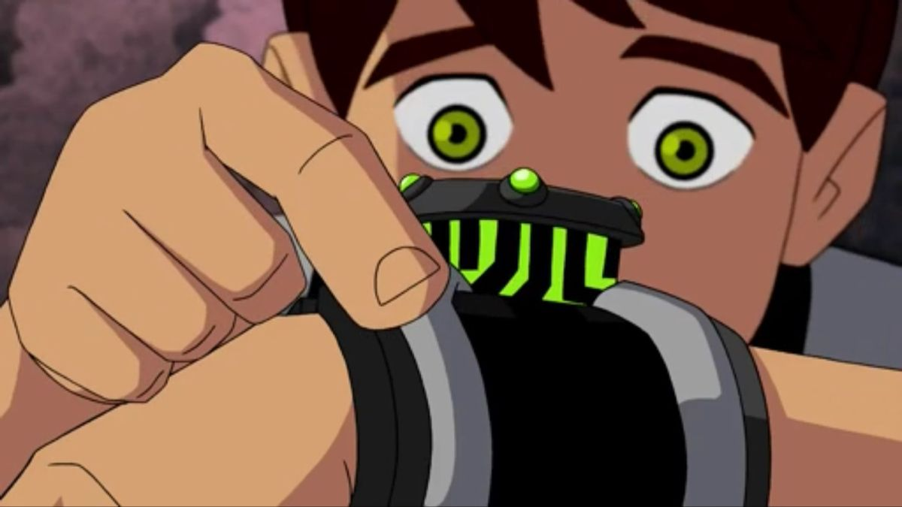

|  |
BiografiaBen 10, cujo nome completo é Ben Tennyson, é o protagonista da franquia Ben 10. No início da história, ele é um garoto com 10 anos de idade que descobre o Omnitrix, um dispositivo alienígena que lhe permite se transformar em diferentes formas de alienígenas. Ben é retratado como um garoto corajoso, impulsivo e cheio de energia. Ele é conhecido por seu senso de humor, atitude destemida e espírito aventureiro. Apesar de inicialmente usar o Omnitrix para se divertir e impressionar os outros, ele logo percebe a responsabilidade que vem com seus poderes e se torna um herói determinado a proteger a Terra. Ao longo da série, Ben desenvolve um grande amor pela luta contra o mal e se esforça para se tornar um herói cada vez melhor. Ele aprende a usar as diferentes formas alienígenas do Omnitrix de maneira estratégica, aproveitando as habilidades únicas de cada uma para enfrentar os desafios que surgem em seu caminho. |
|
Além de seu papel como herói, Ben também passa por um processo de amadurecimento ao longo da série. Ele aprende a valorizar a importância da família, a trabalhar em equipe com sua prima Gwen e seu avô Max, e a tomar decisões difíceis em prol do bem maior. Com o passar do tempo, Ben continua a enfrentar novas ameaças e desafios, e sua jornada o leva a descobrir segredos sobre o Omnitrix, suas origens e o papel que desempenha em um universo repleto de alienígenas e aventuras emocionantes. No geral, Ben 10 é retratado como um jovem herói destemido, carismático e de bom coração, que usa seus poderes alienígenas para proteger a Terra e garantir a segurança de seus habitantes. |
|
Gustavo Henrique A. dos Santos - 2023 |